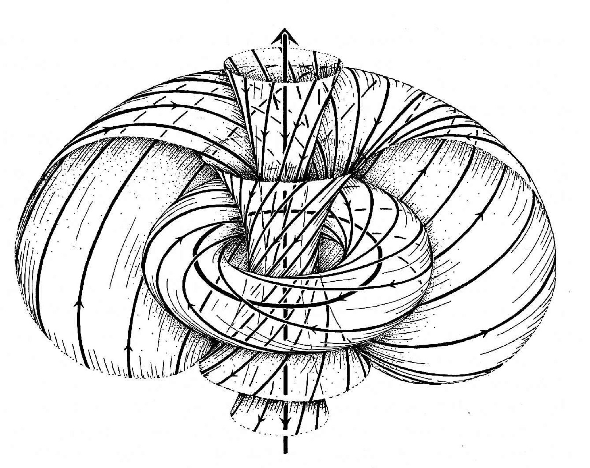

The amplituhedron reveals that everything is non-local, meaning that actions on the far sides of the universe are connected through gravity. This is the opposite of what Einstein thought he was revealing with spacetime. Einstein was trying to show that gravity was a local phenomena, to draw a distinction from Newton's gravity of distant attractions. Einstein predicted gravity waves and entanglement, but he didn't take into consideration that the structure of the entire universe could be acting upon itself.

This torus shape - with ejected material at each end - is the basis of quantum gravity. The torus shape and outflow of particles is similar to the energy flow found around galexies, suns and planets - so perhaps the same flow also occurs for the entire universe.
Before the recent "fountain" effect finding, the jets leaving the poles were thought to be more like lasers.
image.png
The Ilustartion above is from Twistor theory proposed in 1967 as a possible structure for quantum gravity. Source
Twistors are rays of light - massless particles with spin in 4 dimensional vector space.
Twistors are also part of the more recent Jewel at the Heart of Quantum Physics called the Amplituhedron
The Amplituhedron is a multi-dimensiona geometric structure that reduces hundreds of pages of calculations down to a single page.
---
Rather than a single point called a singularity, a rotating black hole has a "ring singularity"
"Falling objects will begin to acquire angular momentum from the ring before they actually strike it, and the path taken by a perpendicular light ray (initially traveling toward the ring's center) will curve in the direction of ring motion before intersecting with the ring."
https://www.wikiwand.com/en/Ring_singularity
Also in wiki page above:
"The inner event horizon of the Kerr geometry is probably not stable, due to the infinite blue-shifting of infalling radiation."
Our conjecture:
This infalling radiation might be how black holes are triggered to release x-rays that plow dust to form new stars.
A comparison to small scale quantum dots with holes:
Tiny rings called "Quantum Donuts" have also been created in the lab to trap and release light using magnetic and electric fields - forms of radiation.
Observations by ALMA and data from the MUSE spectrograph on ESO’s VLT have revealed a colossal fountain of molecular gas powered by a black hole in the brightest galaxy of the Abell 2597 cluster
Gas shoots out of fountains at the poles of the black hole and falls onto cold dust on the orbital plane.
"This hot atomic gas falls back onto the disk creating a turbulent three dimensional structure."
https://phys.org/news/2018-11-black-hole-donuts-fountains.html
Sounds like the same way the universe forms during the big bang!
"We May Finally Understand the Moments Before the Big Bang" - 2 days ago:
"When the universe expanded in a flash of a second during cosmic inflation, all the existing matter was spread out, leaving the universe a cold and empty place, devoid of the hot soup of particles needed to ignite the Big Bang."
https://www.space.com/physicists-model-reheating-universe.html
In the case of the formation of the universe, the hot particles are attributed to the decay of the energy that initially pushed the fast outward inflation prior to the big bang. In contrast, during star formation x-rays from the galaxy's black hole center plow cold dust and hot particles into condensed clusters.
While there are similarities with hot particles interacting with cold dust during both star and galaxy formation, the source of the hot particles during the formation of the universe seems to be the decay from 4 to 3 dimensions after inflation, whereas the hot particles leaving the black hole seem to be ejected from the 1 dimensional ring as a fountain that then rains down on the cold dust in the plane of the galaxy.